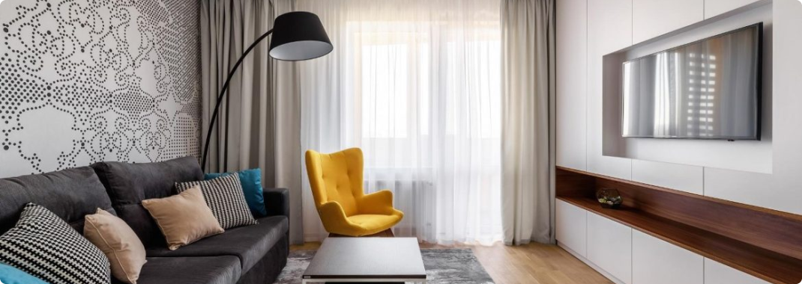

Катерина (уривок)
Кохайтеся, чорнобриві,
Та не з москалями,
Бо москалі — чужі люде,
Роблять лихо з вами.
Москаль любить жартуючи,
Жартуючи кине;
Піде в свою Московщину,
А дівчина гине...
Не слухала Катерина
Ні батька, ні неньки;
Полюбила москалика,
Як знало серденько.
Полюбила молодого,
В садочок ходила;
Поки себе, свою долю
Там занапастила.
От і батько, і матуся
Прощають, леліють,
І втішають; та Катруся
Тільки бачить мріють.
Тільки бачить: то сміється,
То тяженько плаче,
Тато знову нагадує,
А мати не бачить.
Не плач, Катре, не журися,
Ті сльози не впали:
Привітай свого Василька,
Порадуй словами.
Бо сльози твої болючі,
Щоб і він не плакав:
Щоб од чужої хатини
Шлях знайшов до тебе.
Катерина усміхнулась,
Сяйво у дівчаті:
“Милий мій, милий Васильку,
Ласко моя, брате!
Скільки сліз, скільки жалю
Ти мені вклонився?
Заробив ти на дівчину —
З горя посміявся”.
Тарасова доля.
Отака то наша доля,
Такими словами
Встрічає їх у полю люди,
І піснями, й квітами.
Бо були ті москалята,
Молоді та веселі,
Кинули свою родину
Й пішли у пустелі.
Отак-то й наше село,
І наші дівчата
Піде на чужину, на кінець
Пошкодують браття.
Пожаліють, поплачуть,
Та не допоможуть:
Ніколи до своєї хати
Не принесуть долі.
Катерино, серце моє,
Смієшся, не тямиш,
Як вийдеш за москалика,
Будеш горювати.
Змилуйся, молись Богу,
Хай він тебе рятує,
Хай він тебе врятує
І долю подарує.
Благаю тебе, голубонько,
Не слухай свого серця,
Бо буде тобі пізно,
Як підеш у чужину.
Як підеш у чужину,
Не вернешся знову,
Молитимешся і плакатимеш
Та все буде марно.
Катерино, серденько,
Кохайтеся, як зможете,
Та не з москалями,
Бо москалі — чужі люде,
Роблять лихо з вами.
Не слухала Катерина,
Полюбила москаля,
Полюбила молодого,
Та не мала долі.
Оформлення вітальні. Які м'які меблі краще вибрати?
Вітальня – це основна кімната у кожному будинку. Саме вона служить для прийому гостей, проведення часу всією сім'єю та просто для відпочинку у приємній теплій атмосфері. Оформляючи свій будинок та вітальню зокрема, всі намагаються зробити її максимально зручною, комфортною та красивою. Основним та центральним елементом оформлення вітальні, як і будь-якої іншої кімнати, є м'які меблі.
Будь-які меблі для вітальні повинні бути не тільки стильними і красивими, але і функціональними. На таких меблів має бути зручно та приємно відпочивати та приймати гостей. Однак сьогодні існує величезна різноманітність найрізноманітніших м'яких меблів для вітальні, яка підходить для кімнат різних розмірів і форм. На чому варто зупинити свій вибір? Як краще оформити свою вітальню, щоб вам було комфортно, а гості хотіли приходити до вас знову та знову?
На сайті інтернет магазину Кровато представлено велику різноманітність м'яких меблів для вітальні, серед яких кожен зможе вибрати для себе найбільш вдалий варіант. У нас ви знайдете:
- Прямі дивани. Такі дивани вважаються класикою. Вони підходять для віталень будь-яких форм та розмірів. Прямий диван виглядає стильно та лаконічно, на ньому зручно відпочивати, приймати гостей або навіть спати. Прямі дивани можуть стояти біля стіни, так і в центрі кімнати. Багато моделей прямих диванів легко розкладаються, перетворюючись на повноцінне спальне місце. Також більшість диванів мають великі та місткі ніші, які є додатковим місцем для зберігання;
- Кутові дивани. Кутові дивани вважаються найзручнішими та комфортнішими. Вони ідеально підійдуть для приємного проведення часу в колі сім'ї або друзів. Кутові дивани в основному використовуються для оформлення великих віталень, так як вони займають багато місця, і для кімнат з невеликою площею просто не підійдуть;
- Тахти. Тахта - це одна з варіацій дивана, але стильніша і мінімалістична. Виглядають тахти дуже незвично і можуть підійти для будь-якого інтер'єру. Також тахти більше ніж звичайні дивани підходять для сну, оскільки в їх основі не пружинні блоки, а дерев'яні ламелі або ортопедичні матраци;
- Крісла. Крісло – це особливий предмет інтер'єру. Сучасні дизайнери не часто використовують його, вважаючи застарілим, проте саме крісла створюють особливий затишок та комфорт у будь-якій кімнаті. Сьогодні існує величезна різноманітність класичних та сучасних моделей крісел, що дозволяє кожному відшукати ідеальне крісло для свого будинку;
- Набір меблів. Комплект м'яких меблів – це відмінне рішення для тих, хто хоче меблювати свою вітальню не лише диваном, а й кріслами. Існують набори з одним або двома кріслами, із прямими або кутовими диванами. Основна перевага будь-якого готового меблевого гарнітура – це те, що предмети меблів у ньому ідеально поєднуються один з одним, і вам не потрібно буде витрачати свій час та сили на їхній підбір.
Підбір м'яких меблів для вітальні – це заняття непросте. Однак при виборі та покупці меблів для своєї вітальні пам'ятайте, що якісні м'які меблі повинні бути не тільки красивими, але й зручними для вас і всіх мешканців вашого будинку.
Як правильно обрати ліжко?
При виборі ліжка в інтернет магазині Вам в першу чергу потрібно вибрати матеріал. Найбільшою популярністю користуються дерев'яні ліжка, виготовлені з вільхи, ясена чи дуба. Такі моделі чудово прикрасять Вашу спальню у квартирі чи приватному будинку. Для орендованих квартир, під здачу, більше підійде ліжко з металу, так як воно просто «не вбивається», а також має дуже демократичну ціну.
Для Вашої зручності ліжко може комплектуватись висувними ящиками або підйомним механізмом. Ящики можуть бути з одного боку ліжка або з двох. Також є моделі, з висувними ящиками спереду. Ліжка з підйомним механізмом, це відмінне рішення, для невеликих кімнат, вони дозволяють заощадити простір і мають велику нішу для зберігання постільної білизни. Всі дерев'яні ліжка комплектуються буковими ламелями. Спальне місце з ламельною основою може витримувати навантаження до 150 кг на одне спальне місце. Відстань між ламелями, у своїй має бути 2,5-3 див.